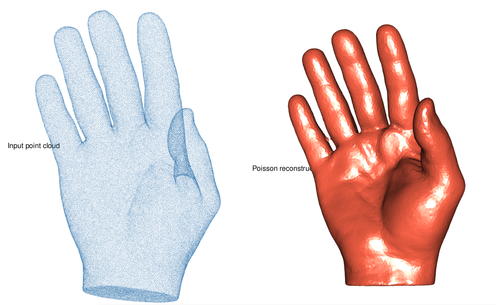

Poisson Surface Reconstruction
poisson_reco.RmdPoisson surface reconstruction retrieves a closed, watertight surface mesh from a point cloud equipped with oriented normals.
It operates in an implicit space: it solves a Poisson equation for the indicator function whose gradient best matches the input normals, then extracts the zero level-set as a triangle mesh.
library(vespa)
hand_url <- "https://gitlab.kitware.com/vtk/meshing/vespa/-/raw/master/Data/Testing/hand.vtp?ref_type=heads"
hand_tmp <- tempfile(fileext = ".vtp")
download.file(hand_url, hand_tmp, quiet = TRUE)Preparation
The demo uses hand.vtp from the VESPA test suite — a
dense triangulated surface mesh of a human hand (61 082 vertices, 122
160 triangles). We deliberately discard the face connectivity and retain
only the vertex positions, turning the mesh into a raw, unstructured
point cloud. This lets us run the full reconstruction pipeline: normal
estimation with PCA, then Poisson reconstruction. The original mesh will
serve as ground-truth for the visual comparison at the end.
We then strip the face connectivity to obtain a raw, unstructured point cloud:
Normal estimation
poisson_reconstruction() requires oriented normals. If
your point cloud has none (as is the case here, since we stripped the
mesh connectivity and with it any per-vertex normal information), use
pca_estimate_normals(): it fits a local plane to the
n_neighbors nearest neighbours and derives a normal from
that plane.
Setting orient = TRUE propagates a consistent
orientation across the cloud via a minimum spanning tree on the normal
graph.
hand_pts <- pca_estimate_normals(hand_pts, n_neighbors = 18L, orient = TRUE)Poisson reconstruction
The three key parameters control the density and quality of the output mesh:
| Parameter | Role |
|---|---|
min_angle |
Minimum triangle angle (degrees). Higher values give more regular triangles but may increase face count. |
max_size |
Maximum triangle edge length relative to the local point spacing. Lower values produce finer meshes. |
distance |
Maximum Hausdorff distance between the output mesh and the implicit surface. Smaller values follow the surface more faithfully. |
hand_recon <- poisson_reconstruction(
hand_pts,
min_angle = 20,
max_size = 2,
distance = 0.375
)
print(hand_recon)
#> <mesh3d> 72970 vertices 23772 facesComparison
summary(hand_mesh)
#>
#> ── mesh3d
#> Vertices: 61082
#> Faces: 122160
#> X range: [-0.96596, 0.89204]
#> Y range: [-0.64539, 0.70538]
#> Z range: [-0.51493, 0.34991]
#> Diagonal: 2.4545
#> Normals: no
#>
summary(hand_recon)
#>
#> ── mesh3d
#> Vertices: 72970
#> Faces: 23772
#> X range: [-0.96596, 0.89204]
#> Y range: [-0.64539, 0.70538]
#> Z range: [-0.51493, 0.34991]
#> Diagonal: 2.4545
#> Normals: noThe Poisson method tends to produce a smooth, slightly blurred
reconstruction because the implicit solve acts as a low-pass filter.
Tightening distance and max_size recovers
finer surface details at the cost of a higher face count.
rgl::mfrow3d(1, 2)
rgl::points3d(t(hand_pts$vb[1:3, ]), size = 1, col = "steelblue")
rgl::title3d("Input point cloud")
rgl::next3d()
rgl::shade3d(hand_recon, col = "tomato")
rgl::title3d("Poisson reconstruction")